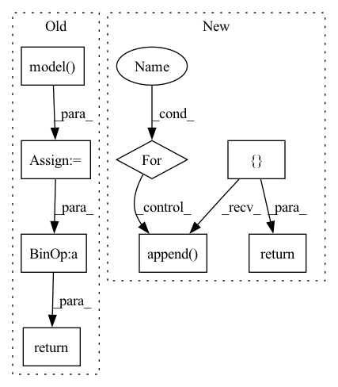

Pattern ID :19365

Before Change
for i in inputs:
inf_inputs.append(Perturbation.perturb_tensor(i, self.reg_params.n_samples).float().cuda())
inf_output = self.model(inf_inputs)
inf_loss = torch.nn.functional.binary_cross_entropy_with_logits(inf_output, expanded_logits)
gradients = torch.autograd.grad(inf_loss, inf_inputs, create_graph=True)
grads = [Regularization.get_batch_norm(gradients[k], loss=inf_loss,
estimation=self.reg_params.estimation) for k in range(2)]
inf_scores = torch.stack(grads)
reg_term = Regularization.get_regularization_term(inf_scores, norm=self.reg_params.norm,
optim_method=self.reg_params.optim_method)
return self.reg_params.delta * reg_term
After Change
expanded_logits = Perturbation.get_expanded_logits(logits, self.reg_params.n_samples)
inf_inputs = []
inf_inputs_len = []
for ind, i in enumerate(inputs[0]):
inf_inputs.append(Perturbation.perturb_tensor(i, self.reg_params.n_samples).float().cuda())
inf_inputs_len.append(Perturbation.perturb_tensor(inputs[1][ind], self.reg_params.n_samples,False))
inf_output = self.model([inf_inputs, inf_inputs_len], training=True)
inf_loss = torch.nn.functional.binary_cross_entropy_with_logits(inf_output, expanded_logits)
gradients = torch.autograd.grad(inf_loss, inf_inputs, create_graph=True)
grads = [Regularization.get_batch_norm(gradients[k], loss=inf_loss,
estimation=self.reg_params.estimation) for k in range(2)]
inf_scores = torch.stack(grads)
reg_term = Regularization.get_regularization_term(inf_scores, norm=self.reg_params.norm,
optim_method=self.reg_params.optim_method)
return self.delta * reg_term
In pattern: SUPERPATTERN
Frequency: 3
Non-data size: 8
Instances
Fragment ID: 63146433
Project Name: pliang279/multibench
Commit Name: c54605f2e0f9be6777682e7598449cf2b1cd3898
Time: 2021-04-07
Author: ztwu_nil@zju.edu.cn
File Name: objective_functions/regularization.py
M Class Name: RegularizationLoss
N Class Name: RegularizationLoss
M Method Name: forward(3)
N Method Name: forward(3)
M Parent Class: torch.nn.Module
N Parent Class: torch.nn.Module
M File Name: objective_functions/regularization.py
N File Name: objective_functions/regularization.py
M Start Line: 228
M End Line: 243
N Start Line: 233
N End Line: 250
'>
Before Change
image = torch.from_numpy(image).unsqueeze(0).to(device)
mask = torch.from_numpy(mask).unsqueeze(0).to(device)
inpainted_image = self.model(image, mask)
cur_res = inpainted_image[0].permute(1, 2, 0).detach().cpu().numpy()
cur_res = cur_res[0:origin_height, 0:origin_width, :]
cur_res = np.clip(cur_res * 255, 0, 255).astype("uint8")
cur_res = cv2.cvtColor(cur_res, cv2.COLOR_BGR2RGB)
return cur_res
After Change
print("Trigger crop image")
boxes = boxes_from_mask(mask)
crop_result = []
for box in boxes:
crop_image, crop_box = self._run_box(image, mask, box)
crop_result.append((crop_image, crop_box))
image = (image.transpose(1, 2, 0) * 255).astype(np.uint8)[:, :, ::-1]
for crop_image, crop_box in crop_result:
x1, y1, x2, y2 = crop_box
image[y1:y2, x1:x2, :] = crop_image
return image
def _run_box(self, image, mask, box):
'>
Fragment ID: 63146432
Project Name: sanster/lama-cleaner
Commit Name: 43c9c22c7312dd39feac4e3783e9ec080fd64243
Time: 2022-03-22
Author: cwq1913@gmail.com
File Name: lama_cleaner/lama/__init__.py
M Class Name: LaMa
N Class Name: LaMa
M Method Name: __call__(3)
N Method Name: __call__(3)
M Parent Class:
N Parent Class:
M File Name: lama_cleaner/lama/__init__.py
N File Name: lama_cleaner/lama/__init__.py
M Start Line: 40
M End Line: 55
N Start Line: 50
N End Line: 65
'>
Before Change
for i in inputs:
inf_inputs.append(Perturbation.perturb_tensor(i, self.reg_params.n_samples).float().cuda())
inf_output = self.model(inf_inputs)
inf_loss = torch.nn.functional.binary_cross_entropy_with_logits(inf_output, expanded_logits)
gradients = torch.autograd.grad(inf_loss, inf_inputs, create_graph=True)
grads = [Regularization.get_batch_norm(gradients[k], loss=inf_loss,
estimation=self.reg_params.estimation) for k in range(2)]
inf_scores = torch.stack(grads)
reg_term = Regularization.get_regularization_term(inf_scores, norm=self.reg_params.norm,
optim_method=self.reg_params.optim_method)
return self.reg_params.delta * reg_term
After Change
expanded_logits = Perturbation.get_expanded_logits(logits, self.reg_params.n_samples)
inf_inputs = []
inf_inputs_len = []
for ind, i in enumerate(inputs[0]):
inf_inputs.append(Perturbation.perturb_tensor(i, self.reg_params.n_samples).float().cuda())
inf_inputs_len.append(Perturbation.perturb_tensor(inputs[1][ind], self.reg_params.n_samples,False))
inf_output = self.model([inf_inputs, inf_inputs_len], training=True)
inf_loss = torch.nn.functional.binary_cross_entropy_with_logits(inf_output, expanded_logits)
gradients = torch.autograd.grad(inf_loss, inf_inputs, create_graph=True)
grads = [Regularization.get_batch_norm(gradients[k], loss=inf_loss,
estimation=self.reg_params.estimation) for k in range(2)]
inf_scores = torch.stack(grads)
reg_term = Regularization.get_regularization_term(inf_scores, norm=self.reg_params.norm,
optim_method=self.reg_params.optim_method)
return self.delta * reg_term
'>
Fragment ID: 63146430
Project Name: pliang279/multibench
Commit Name: 0e0c7a49dc117cdb06f01380158e60a7ab4e0040
Time: 2021-04-07
Author: ztwu_nil@zju.edu.cn
File Name: objective_functions/regularization.py
M Class Name: RegularizationLoss
N Class Name: RegularizationLoss
M Method Name: forward(3)
N Method Name: forward(3)
M Parent Class: torch.nn.Module
N Parent Class: torch.nn.Module
M File Name: objective_functions/regularization.py
N File Name: objective_functions/regularization.py
M Start Line: 228
M End Line: 243
N Start Line: 233
N End Line: 250